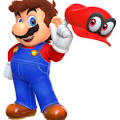
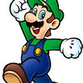
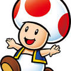

Mario e seus amigos
Vamos ver o mundo do cogumelo
Mario

Mario é um personagem fictício da franquia e série de jogos eletrônicos Mario da Nintendo
Luigi

Luigi é irmão do Mario e é um dos mascotes da série, ele é o seu companheiro em vários jogos
Toad

Toad, conhecido no Japão como Kinopio, é um cogumelo amigo de peach
Yoshi

Yoshi é um personagem fictício, um dinossauro antropomórfico, e o melhor pet do mundo